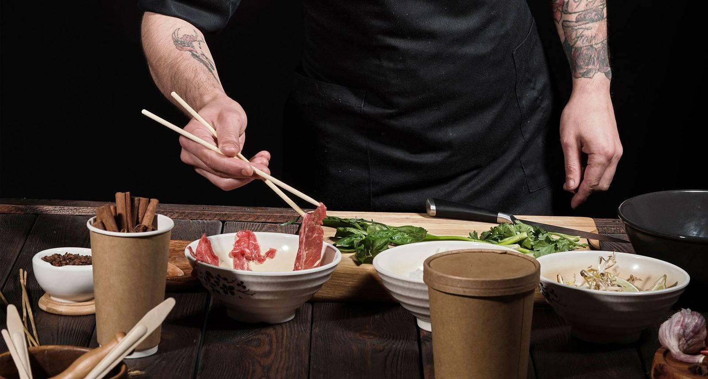

Brand
Book
Parasta palvelua läheltä
Palvelutukku Kolmio
Päijät-Häme · Kymenlaakso · Etelä-Karjala
Parasta palvelua läheltä
Palvelutukku Kolmio on valtakunnalliseen Suomen Palvelutukkurit -ketjuun kuuluva täyden palvelun tukkuliike. Aloitimme toimintamme vihannestukkuliikkeenä — siitä juontaa juurensa myös virallinen nimemme Vihanneskolmio Oy. Nykyisin valikoimaamme kuuluvat kaikki elintarvikeryhmät ja laaja valikoima non-food-tuotteita, mutta paikallisuus ja aito palvelu ovat pysyneet toimintamme ytimessä koko matkan.
Toimitamme tuotteet Päijät-Hämeen, Kymenlaakson ja Etelä-Karjalan alueen ravintoloihin, keittiöihin ja kahviloihin — usein jopa saman päivän aikana. Jotta me voimme menestyä, täytyy sinun menestyä.
Kuormassa tulee aina kaikki tilatut tuotteet — tuoreina ja ajallaan. Toimituspoikkeamiin reagoidaan heti.
Teemme tiivistä yhteistyötä paikallisten tuottajien kanssa ja tuomme alueen laadukkaimman lähiruoan lyhintä reittiä.
Paikallisena tukkuna pystymme reagoimaan muuttuneisiin tarpeisiin nopeasti ja räätälöimään palvelua.
ISO 14001 -ympäristöohjelma, laskettu hiilijalanjälki ja aktiivinen työ hävikin pienentämiseksi koko ketjussa.
Karla on leipätekstimme — rauhallinen, hyvin luettava humanistinen groteski. Sitä käytetään kaikessa pidemmässä sisällössä: kappaleteksteissä, kuvateksteissä ja lomakkeissa. Jost puolestaan kantaa persoonaa otsikoissa ja painikkeissa — geometrinen, hieman kapea ja luottavainen.



Kuvamaailmamme on aito eikä lavastettu: oikeita ihmisiä, oikeaa ruokaa ja oikeaa arkea logistiikasta keittiöön. Suosimme lämmintä, luonnollista valoa ja lähikuvia käsistä, raaka-aineista ja työstä. Henkilökuvat ovat neliömuotoisia, rajattu rinnasta ylöspäin, tausta yksinkertainen.


Sertifikaatti- ja kumppanuusmerkit esitetään aina alkuperäisinä versioinaan — niitä ei värjätä uudelleen tai muokata. Omat ikonit noudattavat yhtenäistä pyöreää muotoa ja kevyttä, käsintehtyä viivapiirrosta.
Pyöristetyt kulmat, ohut reunaviiva, kevyt varjo.
Käytä tätä ohjeistoa perustana kaikessa visuaalisessa viestinnässä — verkkosivuilla, markkinointimateriaaleissa ja painotuotteissa. Kysymykset ja päivitystoiveet voi osoittaa suoraan markkinoinnista vastaavalle henkilölle.